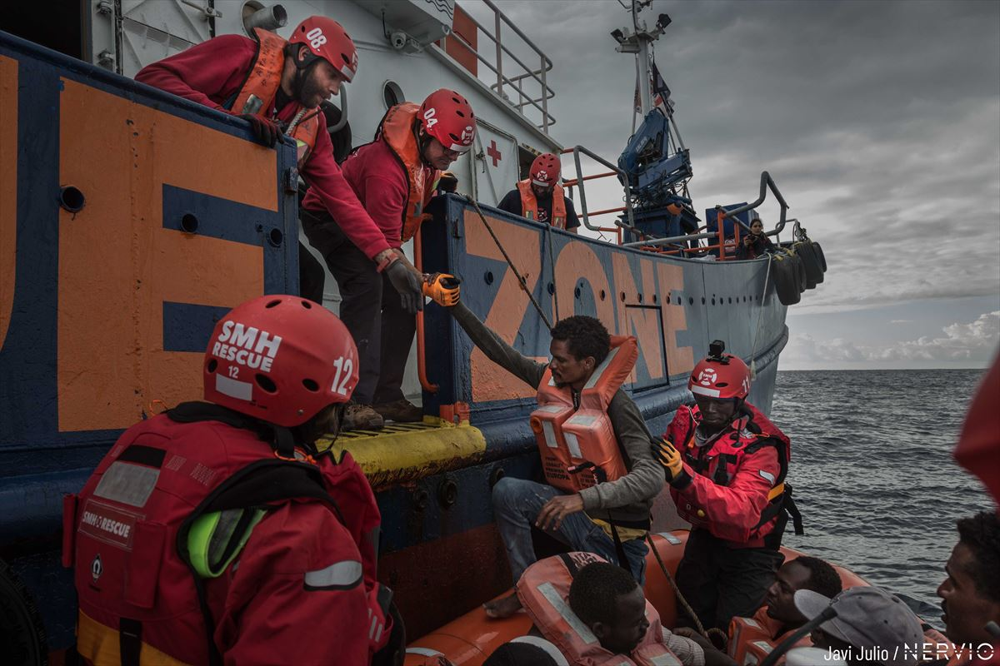

En SeaSaver, nos dedicamos a salvar vidas en el mar. Nuestro equipo de profesionales y voluntarios trabaja incansablemente para realizar operaciones de rescate, brindar asistencia humanitaria y proteger a quienes se encuentran en situaciones de peligro en aguas abiertas.
Además, promovemos la concienciación sobre la seguridad marítima y colaboramos con comunidades locales y organismos internacionales para garantizar un impacto positivo y duradero. ¡Juntos hacemos del mar un lugar más seguro!
Brindamos asistencia a embarcaciones en peligro y salvamos vidas en situaciones de emergencia
Impartimos talleres y campañas de concienciación sobre seguridad en el mar